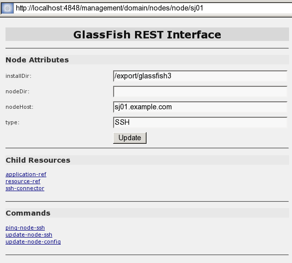

asadmin [asadmin-util-options] [subcommand [subcommand-options] [operands]]2 General Administration
This chapter provides instructions for performing general administration
tasks in the GlassFish Server Open Source Edition 5.0 environment by
using the asadmin command-line utility.
The following topics are addressed here:
Instructions for accomplishing the tasks in this chapter by using the Administration Console are contained in the Administration Console online help.
Using the asadmin Utility
Use the asadmin utility to perform administrative tasks for GlassFish
Server from the command line or from a script. You can use this utility
instead of the Administration Console interface.
The following topics are addressed here:
Path to the asadmin Utility
The asadmin utility is located in the as-install`/bin` directory. To
run the asadmin utility without specifying the path, ensure that this
directory is in your path.
asadmin Utility Syntax
The syntax for running the asadmin utility is as follows:
The replaceable items in this syntax are described in the subsections
that follow. For full details of this syntax, see the
asadmin(1M)
help page.
Subcommands of the asadmin Utility
The subcommand identifies the operation or task that you are performing. Subcommands are case-sensitive. Each subcommand is either a local subcommand or a remote subcommand.
-
A local subcommand can be run without a running domain administration server (DAS). However, to run the subcommand and have access to the installation directory and the domain directory, the user must be logged in to the machine that hosts the domain.
-
A remote subcommand is always run by connecting to a DAS and running the subcommand there. A running DAS is required.
For a list of the subcommands for this release of GlassFish Server, see Section 1 of the GlassFish Server Open Source Edition Reference Manual.
asadmin Utility Options and Subcommand Options
Options control the behavior of the asadmin utility and its
subcommands. Options are case-sensitive.
The asadmin utility has the following types of options:
-
asadmin`utility options. These options control the behavior of the `asadminutility, not the subcommand. Theasadminutility options may precede or follow the subcommand, butasadminutility options after the subcommand are deprecated. Allasadminutility options must either precede or follow the subcommand. Ifasadminutility options are specified both before and after the subcommand, an error occurs. For a description of theasadminutility options, see theasadmin(1M) help page. -
Subcommand Options. These options control the behavior of the subcommand, not the
asadminutility. Subcommand options must follow the subcommand. For a description of a subcommand’s options, see the entry for the subcommand in the GlassFish Server Open Source Edition Reference Manual.
|
Note
|
Not all subcommand options are supported for this release of GlassFish Server. If you specify an unsupported option, a syntax error does not occur. Instead, the command runs successfully and the unsupported option is silently ignored. |
A subcommand option may have the same name as an asadmin utility
option, but the effects of the two options are different.
Options have a long form and a short form.
-
The short form of an option has a single dash (
-) followed by a single character. -
The long form of an option has two dashes (
--) followed by an option word.
For example, the short form and the long form of the option for specifying terse output are as follows:
-
Short form:
-t -
Long form:
--terse
Most options require argument values, except Boolean options, which toggle to enable or disable a feature.
Operands of asadmin Utility Subcommands
Operands specify the items on which the subcommand is to act. Operands
must follow the argument values of subcommand options, and are set off
by a space, a tab, or double dashes (--). The asadmin utility treats
anything that follows the subcommand options and their values as an
operand.
To Run an asadmin Utility Subcommand in Single Mode
In single mode, you must type a separate asadmin command for each
subcommand that you want to use. After the subcommand has run, you are
returned to the operating system’s command shell. Any asadmin utility
options must be specified in each separate asadmin command that you
run. If you require the same asadmin utility options for multiple
subcommands, use the asadmin utility in multimode. For more
information, see To Start a Multimode Session.
-
In the operating system’s command shell, run the
asadminutility, specifying the subcommand. -
If necessary, also specify any required
asadminutility options, subcommand options, and operands.
Example 2-1 Running an asadmin Utility Subcommand in Single Mode
This example runs the list-applications subcommand
in single mode. In this example, the default values for all options are
used.
The example shows that the application hello is deployed on the local
host.
asadmin list-applications
hello <web>
Command list-applications executed successfully.Example 2-2 Specifying an asadmin Utility Option With a Subcommand in
Single Mode
This example specifies the --host asadmin utility option with the
list-applications subcommand in single mode. In this example, the DAS
is running on the host srvr1.example.com.
The example shows that the applications basic-ezcomp, scrumtoys,
ejb31-war, and automatic-timer-ejb are deployed on the host
srvr1.example.com.
asadmin --host srvr1.example.com list-applications
basic-ezcomp <web>
scrumtoys <web>
ejb31-war <ejb, web>
automatic-timer-ejb <ejb>
Command list-applications executed successfully.Example 2-3 Specifying an asadmin Utility Option and a Subcommand
Option in Single Mode
This example specifies the --host asadmin utility option and the
--type subcommand option with the list-applications subcommand in
single mode. In this example, the DAS is running on the host
srvr1.example.com and applications of type web are to be listed.
asadmin --host srvr1.example.com list-applications --type web
basic-ezcomp <web>
scrumtoys <web>
ejb31-war <ejb, web>
Command list-applications executed successfully.To Display Help Information for the asadmin Utility or a Subcommand
GlassFish Server provides help information about the syntax, purpose,
and options of the asadmin utility and its subcommands. This help
information is written in the style of UNIX platform man pages. This
help information is also available in the GlassFish Server
Open Source Edition Reference Manual.
-
If you are displaying help information for a remote subcommand, ensure that the server is running.
Remote subcommands require a running server. -
Specify the subcommand of interest as the operand of the
helpsubcommand.
If you run thehelpsubcommand without an operand, help information for theasadminutility is displayed.
Example 2-4 Displaying Help Information for the asadmin Utility
This example displays the help information for the asadmin utility.
asadmin helpExample 2-5 Displaying Help Information for an asadmin Utility
Subcommand
This example displays the help information for the
create-jdbc-resource subcommand.
asadmin help create-jdbc-resourceSee Also
To display the available subcommands, use the
list-commands subcommand. Local subcommands are
displayed before remote subcommands. If the server is not running, only
local subcommands are displayed.
To Start a Multimode Session
The asadmin utility can be used in multiple command mode, or
multimode. In multimode, you run the asadmin utility once to start a
multimode session. During the session, the asadmin utility continues
to accept subcommands until you end the session and return to the
operating system’s command shell. Any asadmin utility options that you
set for your multimode session are used for all subsequent subcommands
in the session.
|
Note
|
Starting a multimode session does not require a running DAS. |
-
Do one of the following:
-
Run the
asadminutility without a subcommand. -
Use the
multimodesubcommand.
-
-
If necessary, also specify any
asadminutility options that will apply throughout the multimode session. -
In a multimode session, the
asadmin>prompt is displayed on the command line. You can now typeasadminsubcommands at this prompt to administer GlassFish Server.
Example 2-6 Starting a Multimode Session With asadmin Utility Options
This example starts a multimode session in which the asadmin utility
options --user and --passwordfile are set for the session.
asadmin --user admin1 --passwordfile pwd.txt multimodeExample 2-7 Starting a Multimode Session by Using the multimode
Subcommand
This example uses the multimode subcommand to start a multimode
session in which the default asadmin utility options are used.
asadmin multimodeThe asadmin> prompt is displayed on the command line.
Example 2-8 Running a Subcommand in a Multimode Session
This example starts a multimode session and runs the list-domains
subcommand in the session.
asadmin
Enter commands one per "line", ^D to quit
asadmin> list-domains
Name: domain1 Status: Running
Command list-domains executed successfully.
asadmin>Starting a Multimode Session From Within an Existing Multimode Session
You can start a multimode session from within an existing session by
running the multimode subcommand from within the existing session.
After you end the second multimode session, you return to your original
multimode session.
See Also
You can also view the full syntax and options of the subcommand by
typing asadmin help multimode at the command line.
To End a Multimode Session
At the asadmin> prompt, type one of the following commands or key
combinations:
-
exit -
quit -
UNIX and Linux systems: Ctrl-D
-
Windows systems: Ctrl-Z
|
Caution
|
Do not type Ctrl-C to end a multimode session. If a domain or GlassFish Server instance is started from the multimode session, typing Ctrl-C kills the domain or instance process. |
You are returned to the operating system’s command shell and the
asadmin> prompt is no longer displayed. If the asadmin> prompt is
still displayed, you might have opened a multimode session within a
multimode session. In this situation, repeat this procedure to end the
remaining multimode session.
To Run a Set of asadmin Subcommands From a File
Running a set of asadmin subcommands from a file enables you to
automate repetitive tasks.
-
Create a plain text file that contains the sequence of subcommands that you want to run.
-
Run the
multimodesubcommand, specifying the file that you created.
If necessary, also specify anyasadminutility options that are required to enable subcommands in the file to run.
Example 2-9 Running a Set of asadmin Subcommands From a File
This example contains the following:
-
A listing of a file that is named
commands_file.txt, which contains a sequence ofasadminsubcommands -
The command to run the subcommands in the file
commands_file.txt
The commands_file.txt file contains the asadmin utility subcommands
to perform the following sequence of operations:
-
Creating the domain
customdomain -
Starting the domain
customdomain -
Listing all available subcommands
-
Stopping the domain
customdomain -
Deleting the domain
customdomain
The content of the commands_file.txt file is as follows:
create-domain --portbase 9000 customdomain
start-domain customdomain
list-commands
stop-domain customdomain
delete-domain customdomainThis example runs the sequence of subcommands in the commands_file.txt
file. Because the --portbase option is specified for the
create-domain subcommand in the file, the --port asadmin utility
option must also be set.
asadmin --port 9048 multimode --file commands_file.txtSee Also
For more information about the subcommands in the preceding example, see the following help pages:
To Run asadmin Subcommands in --detach Mode
You can use the --detach option of the asadmin utility to detach
asadmin subcommands and run them in the background in detach mode. The
asadmin --detach option is useful for long-running subcommands and
enables you to run several independent subcommands from one console or
script.
-
Ensure that the server is running.
Remote commands require a running server. -
Detach and run the subcommand by using the
asadmin--detachoption.
Example 2-10 Using the --detach Option in Single Mode
This example uses the asadmin --detach option in single mode to run
the create-cluster subcommand.
asadmin --detach create-cluster Cluster1
Job ID: 1
Command create-cluster started successfully.Example 2-11 Using the --detach Option in Multimode
This example uses the asadmin --detach option in multimode to run
the create-cluster subcommand.
asadmin> create-cluster Cluster1 --detach
Job ID: 1
Command create-cluster started successfully.Job IDs are assigned to subcommands that are started using the asadmin
--detach option or that contain progress information. You can use the
list-jobs subcommand to list jobs and their job IDs, the attach
subcommand to reattach to a job and view its status, and the
configure-managed-jobs subcommand to configure how long information
about jobs is kept.
Example 2-12 Listing Jobs
This example runs the list-jobs subcommand in multimode to list jobs
and job information.
asadmin> list-jobs
JOB ID COMMAND STATE EXIT CODE TIME OF COMPLETION
1 create-cluster COMPLETED SUCCESS 2013-02-15 16:16:16 PST
2 deploy COMPLETED FAILURE 2013-02-15 18:26:30 PST
Command list-jobs executed successfullyExample 2-13 Attaching to a Subcommand and Checking Its Status
This example runs the attach subcommand in multimode to attach to the
create-cluster subcommand with a job ID of 1. If a subcommand is
still in progress, the output displays the current status, such as
percentage complete.
asadmin> attach 1
Command create-cluster executed with status SUCCESS.
Command attach executed successfully.Example 2-14 Configuring Managed Jobs
This example runs the configure-managed-jobs subcommand in multimode
to set the job retention period to 36 hours. Time periods can be
specified in Hh|Mm|Ss for hours, minutes, or seconds.
asadmin> configure-managed-jobs --job-retention-period=36h
Command configure-managed-jobs executed successfully.See Also
For the full syntax and options of the subcommands in the preceding examples, see the following help pages:
Administering System Properties
Shared server instances will often need to override attributes defined in their referenced configuration. Any configuration attribute can be overridden through a system property of the corresponding name.
The following topics are addressed here:
To Create System Properties
Use the create-system-properties subcommand in remote mode to create
or update one or more system properties of the domain or configuration.
Any configuration attribute can be overwritten through a system property
of the corresponding name.
-
Ensure that the server is running.
Remote subcommands require a running server. -
Create system properties by using the
create-system-propertiessubcommand.
Information about properties for the subcommand is included in this help page.
Example 2-15 Creating a System Property
This example creates a system property associated with
http-listener-port=1088 on localhost.
asadmin> create-system-properties http-listener-port=1088
Command create-system-properties executed successfully.See Also
You can also view the full syntax and options of the subcommand by
typing asadmin help create-system-properties at the command line.
To List System Properties
Use the list-system-properties subcommand in remote mode to list the
system properties that apply to a domain, cluster, or server instance or
configuration.
-
Ensure that the server is running.
Remote subcommands require a running server. -
List system properties by using the
list-system-propertiessubcommand.
The existing system properties are displayed, including predefined properties such asHTTP_LISTENER_PORTandHTTP_SSL_LISTENER_PORT.
Example 2-16 Listing System Properties
This example lists the system properties on host localhost.
asadmin> list-system-properties
http-listener-port=1088
Command list-system-properties executed successfully.See Also
You can also view the full syntax and options of the subcommand by
typing asadmin help list-system-properties at the command line.
To Delete a System Property
Use the delete-system-property subcommand in remote mode to delete
system properties.
-
Ensure that the server is running.
Remote subcommands require a running server. -
List the existing system properties by using the
list-system-propertiessubcommand. -
Delete the system property by using the
delete-system-propertysubcommand. -
If necessary, notify users that the system property has been deleted.
Example 2-17 Deleting a System Property
This example deletes a system property named http-listener-port from
localhost.
asadmin> delete-system-property http-listener-port
Command delete-system-property executed successfully.See Also
You can also view the full syntax and options of the subcommand by
typing asadmin help delete-system-property at the command line.
Using Configuration Modularity
With configuration modularity in GlassFish Server Open Source Edition,
new modules can be added to GlassFish Server distributions without
modifying the global domain.xml configuration file. Default
configuration data for modules is stored in the modules themselves,
rather than in domain.xml, and loaded when needed.
Module configuration elements are stored in domain.xml only when the
default configuration included in the module is changed or when module
configuration elements are added to domain.xml using the
create-module-config subcommand. The delete-module-config subcommand
removes module configuration elements from domain.xml, and the
get-active-module-config subcommand displays the current active
configuration of a module.
To Add the Default Configuration of a Module to domain.xml
Use the create-module-config subcommand to add the default
configuration of a module to domain.xml.
-
Ensure that the server is running.
Remote subcommands require a running server. -
Add the default configuration of a module to
domain.xmlby using thecreate-module-configsubcommand.
Example 2-18 Adding Module Configuration to domain.xml
This example adds the default configuration of the web container module
to domain1 in server-config (the default configuration). Use the
--dryrun option to preview the configuration before it is added.
asadmin> create-module-config web-container
Command create-module-config executed successfully.See Also
You can also view the full syntax and options of the subcommand by
typing asadmin help create-module-config at the command line.
To Remove the Configuration of a Module From domain.xml
Use the delete-module-config subcommand to remove the configuration of
a module from domain.xml and cause the module to use the default
configuration included in the module.
-
Ensure that the server is running.
Remote subcommands require a running server. -
Remove the configuration of a module from
domain.xmlby using thedelete-module-configsubcommand.
Example 2-19 Removing Module Configuration From domain.xml
This example deletes the configuration of the web container module from
domain1 in server-config (the default configuration).
asadmin> delete-module-config web-container
Command delete-module-config executed successfully.See Also
You can also view the full syntax and options of the subcommand by
typing asadmin help delete-module-config at the command line.
To Display the Current Active Configuration of a Module
Use the get-active-module-config subcommand to display the current
active configuration of a module.
-
Ensure that the server is running.
Remote subcommands require a running server. -
Display the current active configuration of a module by using the
get-active-module-configsubcommand.
Example 2-20 Displaying the Current Active Configuration of a Module
This example displays the current active configuration of the JMS
service in server-config (the default configuration).
asadmin> get-active-module-config jms-service
At location: domain/configs/config[server-config]
<jms-service default-jms-host="default_JMS_host" type="EMBEDDED"
<jms-host port="7676" host="localhost" name="default_JMS_host"/>
</jms-service>
Command get-active-module-config executed successfully.See Also
You can also view the full syntax and options of the subcommand by
typing asadmin help get-active-module-config at the command line.
Administering Resources
This section contains instructions for integrating resources into the GlassFish Server environment. Information about administering specific resources, such as JDBC, is contained in other chapters.
To Add Resources From an XML File
Use the add-resources subcommand in remote mode to create the
resources named in the specified XML file. The following resources are
supported: JDBC connection pool and resource, JMS, JNDI, and JavaMail
resources, custom resource, connector resource and work security map,
admin object, and resource adapter configuration.
The XML file must reside in the domain-dir`/config` directory. If you specify a relative path or simply provide the name of the XML file, this subcommand will prepend domain-dir`/config` to this operand.
-
Ensure that the server is running.
Remote subcommands require a running server. -
Add resources from an XML file by using the
add-resourcessubcommand.
Information about properties for the subcommand is included in this help page. -
Restart GlassFish Server.
See To Restart a Domain.
Example 2-21 Adding Resources
This example creates resources using the contents of the resource.xml
file on localhost.
asadmin> add-resources c:\tmp\resource.xml
Command : JDBC resource jdbc1 created successfully.
Command : JDBC connection pool poolA created successfully.
Command add-resources executed successfully.See Also
You can also view the full syntax and options of the subcommand by
typing asadmin help add-resources at the command line.
Listing Various System Elements
The following topics are addressed here:
To Display the GlassFish Server Version
Use the version subcommand in remote mode to display information about
the GlassFish Server version for a particular server. If the subcommand
cannot communicate with the server by using the specified login
(user/password) and target (host/port) information, then the local
version is displayed along with a warning message.
-
Ensure that the server is running.
Remote subcommands require a running server. -
Display the version by using the
versionsubcommand.
Example 2-22 Displaying Version Information
This example displays the version of GlassFish Server on the local host.
asadmin> version
Version = Oracle GlassFish Server 3.0.1 (build 19)
Command version executed successfully.See Also
You can also view the full syntax and options of the subcommand by
typing asadmin help version at the command line.
To List Applications
Use the list-applications subcommand in remote mode to list the
deployed Java applications. If the --type option is not specified, all
applications are listed.
-
Ensure that the server is running.
Remote subcommands require a running server. -
List applications by using the
list-applicationssubcommand.
Example 2-23 Listing Applications
This example lists the web applications on localhost.
asadmin> list-applications --type web
hellojsp <web>
Command list-applications executed successfully.See Also
You can also view the full syntax and options of the subcommand by
typing asadmin help list-applications at the command line.
To List Containers
Use the list-containers subcommand in remote mode to list application
containers.
-
Ensure that the server is running.
Remote subcommands require a running server. -
List containers by using the
list-containerssubcommand.
Example 2-24 Listing Containers
This example lists the containers on localhost.
asadmin> list-containers
List all known application containers
Container : grizzly
Container : ejb
Container : webservices
Container : ear
Container : appclient
Container : connector
Container : jpa
Container : web
Container : security
Container : webbeans
Command list-containers executed successfully.See Also
You can also view the full syntax and options of the subcommand by
typing asadmin help list-containers at the command line.
To List Modules
Use the list-modules subcommand in remote mode to list the modules
that are accessible to the GlassFish Server module subsystem. The status
of each module is included. Possible statuses include NEW and READY.
-
Ensure that the server is running.
Remote subcommands require a running server. -
List modules by using the
list-modulessubcommand.
Example 2-25 Listing Modules
This example lists the accessible modules.
asadmin> list-modulesInformation similar to the following is displayed (partial output):
List Of Modules
Module : org.glassfish.web.jstl-connector:10.0.0.b28
properties=(visibility=public,State=READY,Sticky=true)
Module Characteristics : List of Jars implementing the module
Jar : file:/C:/Preview/v3_Preview_release/distributions/web/target/glass
fish/modules/web/jstl-connector.jar
Module Characteristics : List of imported modules
Module Characteristics : Provides to following services
Module : org.glassfish.admingui.console-common:10.0.0.b28
properties=(visibility=public,State=NEW,Sticky=true)
Module : org.glassfish.admin.launcher:10.0.0.b28
properties=(visibility=public,State=NEW,Sticky=true)
Module : org.glassfish.external.commons-codec-repackaged:10.0.0.b28
properties=(visibility=public,State=NEW,Sticky=true)
Module : com.sun.enterprise.tiger-types-osgi:0.3.32.Preview-b28
properties=(visibility=public,State=READY,Sticky=true)
Module Characteristics : List of imported modules
Module Characteristics : Provides to following services
Module Characteristics : List of Jars implementing the module
Jar : file:/C:/Preview/v3_Preview_release/distributions/web/target/glass
fish/modules/tiger-types-osgi.jar.
...
Command list-modules executed successfully.See Also
You can also view the full syntax and options of the subcommand by
typing asadmin help list-modules at the command line.
To List Subcommands
Use the list-commands subcommand in remote mode to list the deployed
asadmin subcommands. You can specify that only remote subcommands or
only local subcommands are listed. By default, this subcommand displays
a list of local subcommands followed by a list of remote subcommands.
-
Ensure that the server is running.
Remote subcommands require a running server. -
List subcommands by using the
list-commandssubcommand.
Example 2-26 Listing Subcommands
This example lists only local subcommands.
asadmin> list-commands --localonly
create-domain
delete-domain
list-commands
list-domains
login
monitor
start-database
start-domain
stop-domain
stop-database
version
Command list-commands executed successfully.See Also
You can also view the full syntax and options of the subcommand by
typing asadmin help list-commands at the command line.
To List Timers
The timer service is a persistent and transactional notification service that is provided by the enterprise bean container and is used to schedule notifications or events used by enterprise beans. All enterprise beans except stateful session beans can receive notifications from the timer service. Persistent timers set by the service are not destroyed when the server is shut down or restarted.
Use the list-timers subcommand in remote mode to list the persistent
timers owned by a specific server instance. You can use this information
to decide whether to do a timer migration, or to verify that a migration
has been completed successfully.
-
Ensure that the server is running.
Remote subcommands require a running server. -
List timers by using the
list-timerssubcommand.
Example 2-27 Listing Timers
This example lists the timers in a particular standalone server instance. There is one currently active timer set.
asadmin> list-timers server
1
The list-timers command was executed successfully.To Show Component Status
Use the show-component-status subcommand in remote mode to get the
status (either enabled or disabled) of the specified deployed component.
-
Ensure that the server is running.
Remote subcommands require a running server. -
Show component status by using the
show-component-statussubcommand.
Example 2-28 Showing Status of a Component
This example shows the status of the MEjbApp component.
asadmin> show-component-status MEjbApp
Status of MEjbApp is enabled
Command show-component-status executed successfully.Using REST Interfaces to Administer GlassFish Server
GlassFish Server provides representational state transfer (REST) interfaces to enable you to access monitoring and configuration data for GlassFish Server, including data that is provided by newly installed add-on components.
You can access the GlassFish Server REST interfaces through client applications such as:
You can also use the GlassFish Server REST interfaces in REST client applications that are developed in languages such as:
-
JavaScript
-
Ruby
-
Perl
-
Java
-
JavaFX
The implementation of the GlassFish Server REST interfaces is based on project Jersey . Project Jersey is the reference implementation of Java Specification Request (JSR) 311: JAX-RS: The Java API for RESTful Web Services. Information about JSR 311 is also available from the JSR 311 project home page .
The following topics are addressed here:
Using REST URLs to Administer GlassFish Server
Each object in the configuration and monitoring object trees is represented as a REST resource that is accessible through an HTTP uniform resource locator (URL). Access to REST resources for GlassFish Server monitoring and configuration data requires a running DAS.
REST URLs to Resources for Configuration and Monitoring Objects
The formats of the URLs to resources that represent objects in the configuration and monitoring object trees are as follows:
-
Configuration:
http://`host:port/management/domain/`path -
Monitoring:
http://`host:port/monitoring/domain/`path
The replaceable items in these URLs are as follows:
- host
-
The host where the DAS is running.
- port
-
The HTTP port or HTTPS port for administration.
- path
-
The path to the object. The path is the dotted name of the object in which each dot (
.) is replaced with a slash (/).
Note: The path to a GlassFish Server instance is
|
For more information, see the following documentation: + * The link:../reference-manual/dotted-names.html#GSRFM00268[`dotted-names`(5ASC)] help page * link:monitoring.html#ghbaz[How the Monitoring Tree Structure Works] * link:overview.html#giusb[How Dotted Names Work for Configuration]
If the URL to a REST resource for GlassFish Server monitoring or configuration data is opened in a web browser, the browser displays a web page that contains the following information about the resource:
-
A list of the attributes of the resource and their values. If the resource represents an object in the configuration tree, these attributes are presented in an HTML form that you can use to update the resource. Attributes of a resource for an object in the monitoring tree are read only.
-
A list of hypertext links to the children of the resource. This list of links enables you to traverse the tree that contains the resource and to discover the all resources in the tree.
-
A list of hypertext links to resources that represent
asadminsubcommands for non-CRUD operations on the resource.
The following figure shows the web page for the REST resource for managing a domain.
Figure 2-1 Web Page for the REST Resource for Managing a Domain

REST URLs for Accessing the Log File
The server.log file of the DAS is represented as a child that is named
view-log of the resource for managing the domain. A child of the
resource for the server.log file represents the log file details
The formats of the URLs to resources that represent the log file are as follows:
-
Log file:
http://`host:port/management/domain/view-log` -
Log file details:
http://`host:port/monitoring/domain/view-log/details`
The replaceable items in these URLs are as follows:
- host
-
The host where the DAS is running.
- port
-
The HTTP port or HTTPS port for administration.
You can use the optional start parameter in the URL to the resource
for the log file to specify the number of characters at the start of the
file to skip. For example, to skip 10,000 characters, specify the URL as
http://localhost:4848/management/domain/view-log?start=10000. This
example assumes that the DAS is running on the local host and uses the
default port for administration.
The resource for the log file returns the HTTP header
"X-Text-Append-Next", which contains the entire URL to pass to the
GET method to return the changes since the last call. You can use this
header in client applications to get all log entries that were added in
particular interval. For example, by testing the value of the
"X-Text-Append-Next" header in a client thread every 10 seconds, you
can monitor the log entries that were added in the last 10 seconds.
Using REST Resource Methods to Administer GlassFish Server
The GlassFish Server REST interfaces support methods for accessing objects in the monitoring and configuration object trees.
The following table shows the REST methods for administering monitoring and configuration data and the tasks that you can perform with each method. These methods are HTTP 1.1 primitives. For the detailed specification of these primitives, see Hypertext Transfer Protocol — HTTP/1.1 .
Table 2-1 REST Resource Methods for Administering Monitoring and Configuration Data
| Task | REST Method |
|---|---|
Determine the methods and method parameters that an object in the tree supports |
|
Retrieve data for an object in the tree |
|
Add an object to the tree |
|
Update an object in the tree |
|
Delete an object from the tree |
|
|
Note
|
REST requests that add, update, or delete objects must specify the
The |
To Determine the Methods and Method Parameters That an Object in the Tree Supports
The methods and method parameters that an object in the tree supports depend on the REST resource that represents the object:
-
REST resources for monitoring support only the
GETmethod. -
All REST resources for configuration support the
GETmethod. However, only some REST resources for configuration also support thePOSTmethod and theDELETEmethod.
Before performing any operations on an object in the tree, determine the methods and method parameters that the object supports.
You can specify the format in which this information is presented. For more information, see Formats for Resource Representation of Configuration Objects.
|
Note
|
Each |
-
Ensure that the server is running.
Operations on REST resources for GlassFish Server data require a running server. -
Use the
GETmethod on the REST resource that represents the object.
TheGETmethod returns the list of methods that the resource supports. For each method, the list of acceptable message parameters or the list of acceptable query parameters are returned.
Example 2-29 Determining the Methods and Method Parameters That an Object in the Tree Supports
This example uses the cURL utility to determine the methods and method
parameters that the resource for the node sj01 supports. The example
uses the following options of the cURL utility:
-
-Xto specify that theGETmethod is used -
-Hto specify that the resource is represented in JavaScript Object Notation (JSON)
In this example, the DAS is running on the local host and the HTTP port
for administration is 4848. The resource supports the GET method and
the POST method.
Line breaks and white space are added to enhance readability.
curl -X GET -H "Accept: application/json" http://localhost:4848/management/domain/nodes/node/sj01
{
"command":"Node",
"exit_code":"SUCCESS",
"extraProperties":{
"commands":[
{"path":"_delete-node","command":"delete-node","method":"DELETE"},
{"path":"_update-node","command":"_update-node","method":"POST"},
{"path":"ping-node-ssh","command":"ping-node-ssh","method":"GET"},
{"path":"update-node-ssh","command":"update-node-ssh","method":"POST"},
{"path":"update-node-config","command":"update-node-config","method":"POST"}],
"methods":[
{"name":"GET"},
{"name":"POST","messageParameters":{
"installDir":{"optional":"true","type":"string","key":"false"},
"nodeDir":{"optional":"true","type":"string","key":"false"},
"nodeHost":{"optional":"true","type":"string","key":"false"},
"type":{"optional":"true","type":"string","key":"false"}
}
}
],
"entity":{
"installDir":"\/export\/glassfish3",
"name":"sj01",
"nodeDir":null,
"nodeHost":
"sj01.example.com",
"type":"SSH"
},
"childResources":{
"application-ref":
"https:\/\/localhost:4848\/management\/domain\/nodes\/node\/sj01\/application-ref",
"resource-ref":
"https:\/\/localhost:4848\/management\/domain\/nodes\/node\/sj01\/resource-ref",
"ssh-connector":
"https:\/\/localhost:4848\/management\/domain\/nodes\/node\/sj01\/ssh-connector"
}
}
}To Retrieve Data for an Object in the Tree
Retrieving data for an object in the tree obtains the following information about the REST resource that represents the object:
-
A list of the REST methods that the resource supports
-
A list of the attributes of the resource and their values
-
A list of URLs to the children of the resource
You can specify the format in which this information is presented. For more information, see Formats for Resource Representation of Configuration Objects.
-
Ensure that the server is running.
Operations on REST resources for GlassFish Server data require a running server. -
Use the
GETmethod on the REST resource that represents the object.
Example 2-30 Retrieving Data for an Object in the Tree
This example uses the cURL utility to retrieve data for the resource for
a the node sj01. The example uses the following options of the cURL
utility:
-
-Xto specify that theGETmethod is used -
-Hto specify that the resource is represented in JavaScript Object Notation (JSON)
In this example, the DAS is running on the local host and the HTTP port for administration is 4848.
Line breaks and white space are added to enhance readability.
curl -X GET -H "Accept: application/json" http://localhost:4848/management/domain/nodes/node/sj01
{
"command":"Node",
"exit_code":"SUCCESS",
"extraProperties":{
"commands":[
{"path":"_delete-node","command":"delete-node","method":"DELETE"},
{"path":"_update-node","command":"_update-node","method":"POST"},
{"path":"ping-node-ssh","command":"ping-node-ssh","method":"GET"},
{"path":"update-node-ssh","command":"update-node-ssh","method":"POST"},
{"path":"update-node-config","command":"update-node-config","method":"POST"}],
"methods":[
{"name":"GET"},
{"name":"POST","messageParameters":{
"installDir":{"optional":"true","type":"string","key":"false"},
"nodeDir":{"optional":"true","type":"string","key":"false"},
"nodeHost":{"optional":"true","type":"string","key":"false"},
"type":{"optional":"true","type":"string","key":"false"}
}
}
],
"entity":{
"installDir":"\/export\/glassfish3",
"name":"sj01",
"nodeDir":null,
"nodeHost":
"sj01.example.com",
"type":"SSH"
},
"childResources":{
"application-ref":
"https:\/\/localhost:4848\/management\/domain\/nodes\/node\/sj01\/application-ref",
"resource-ref":
"https:\/\/localhost:4848\/management\/domain\/nodes\/node\/sj01\/resource-ref",
"ssh-connector":
"https:\/\/localhost:4848\/management\/domain\/nodes\/node\/sj01\/ssh-connector"
}
}
}To Add an Object to the Tree
-
Ensure that the server is running.
Operations on REST resources for GlassFish Server data require a running server. -
Determine the acceptable message parameters for the
POSTmethod of the resource that represents the parent of the object.
For information about how to perform this step, see To Determine the Methods and Method Parameters That an Object in the Tree Supports. -
Use the
POSTmethod on the REST resource that represents the parent of the object that you are adding. -
Confirm that the object has been added.
Perform this step on the resource that represents the object that you have just added, not the parent. For information about how to perform this step, see To Retrieve Data for an Object in the Tree.
Example 2-31 Adding an Object to the Tree
This example uses the cURL utility to add a JDBC resource object to the tree by creating a REST resource to represent the JDBC resource.
In this example, the DAS is running on the local host and the HTTP port for administration is 4848.
Line breaks are added to enhance readability.
-
This step determines the acceptable message parameters for the
POSTmethod of the resourcejdbc-resource.
curl -X GET -H "Accept: application/json"
http://localhost:4848/management/domain/resources/jdbc-resource
{
"command":"Jdbc-resource",
"exit_code":"SUCCESS",
"extraProperties":{
"commands":[],
"methods":[
{"name":"GET"},
{"name":"POST","messageParameters":{
"description":{"acceptableValues":"","optional":"true","type":"string","defaultValue":""},
"enabled":{"acceptableValues":"",optional":"true","type":"boolean",defaultValue":"true"},
"id":{"acceptableValues":"","optional":"false","type":"string","defaultValue":""},
"poolName":{"acceptableValues":"","optional":"false","type":"string","defaultValue":""},
"property":{"acceptableValues":"","optional":"true","type":"string","defaultValue":"},
"target":{"acceptableValues":"","optional":"true","type":"string","defaultValue":""}
}
}
],
"childResources":{
"jdbc\/__TimerPool":
"https:\/\/localhost:4848\/management\/domain\/resources\/jdbc-resource\/jdbc%2F__TimerPool",
"jdbc\/__default":
"https:\/\/localhost:4848\/management\/domain\/resources\/jdbc-resource\/jdbc%2F__default"
}
}
}
-
This step adds a resource as a child of the
jdbc-resourceresource. The-doption of the cURL utility sets the required message parameters as follows:-
idis set tojdbc/myjdbcresource. -
connectionpoolidis set toDerbyPool.
-
curl -X POST -H "X-Requested-By: GlassFish REST HTML interface" -d id=jdbc/myjdbcresource -d connectionpoolid=DerbyPool http://localhost:4848/management/domain/resources/jdbc-resource
-
This step confirms that the object has been added by retrieving data for the REST resource that represents the object.
curl -X GET -H "Accept: application/json"
http://localhost:4848/management/domain/resources/
jdbc-resource/jdbc%2Fmyjdbcresource
{
"command":"Jdbc-resource",
"exit_code":"SUCCESS",
"extraProperties":{
"commands":[],
"methods":[
{"name":"GET"},
{"name":"POST","messageParameters":{
"description":{"optional":"true","type":"string","key":"false"},
"enabled":{"optional":"true","type":"boolean","defaultValue":"true","key":"false"},
"jndiName":{"optional":"true","type":"string","key":"true"},
"objectType":{"optional":"true","type":"string","defaultValue":"user","key":"false"},
"poolName":{"optional":"true","type":"string","key":"false"}
}
},
{"name":"DELETE","messageParameters":{
"target":{"acceptableValues":"","optional":"true","type":"string","defaultValue":""}
}
}
],
"childResources":{
"property":
"https:\/\/localhost:4848\/management\/domain\/resources\/jdbc-resource\/jdbc%2Fmyjdbcresource\/property"
}
}
}
To Update an Object in the Tree
-
Ensure that the server is running.
Operations on REST resources for GlassFish Server data require a running server. -
Determine the acceptable message parameters for the
POSTmethod of the resource that represents the object.
For information about how to perform this step, see To Determine the Methods and Method Parameters That an Object in the Tree Supports. -
Use the
POSTmethod on the REST resource that represents the object that you are updating. -
Confirm that the object has been updated.
For information about how to perform this step, see To Retrieve Data for an Object in the Tree.
Example 2-32 Updating an Object in the Tree
This example uses the cURL utility to update a JDBC resource in the tree by modifying the REST resource that represents the JDBC resource.
In this example, the DAS is running on the local host and the HTTP port for administration is 4848.
Line breaks are added to enhance readability.
-
This step determines the acceptable message parameters for the
POSTmethod of the resourcejdbc-myjdbcresource.
curl -X OPTIONS -H "Accept: application/json"
http://localhost:4848/management/domain/resources/
jdbc-resource/jdbc-myjdbcresource
{
"command":"Jdbc-resource",
"exit_code":"SUCCESS",
"extraProperties":{
"commands":[],
"methods":[
{"name":"GET"},
{"name":"POST","messageParameters":{
"description":{"optional":"true","type":"string","key":"false"},
"enabled":{"optional":"true","type":"boolean","defaultValue":"true","key":"false"},
"jndiName":{"optional":"true","type":"string","key":"true"},
"objectType":{"optional":"true","type":"string","defaultValue":"user","key":"false"},
"poolName":{"optional":"true","type":"string","key":"false"}
}
},
{"name":"DELETE","messageParameters":{
"target":{"acceptableValues":"","optional":"true","type":"string","defaultValue":""}
}
}
],
"childResources":{
"property":
"https:\/\/localhost:4848\/management\/domain\/resources\/jdbc-resource\/jdbc%2Fmyjdbcresource\/property"
}
}
}
-
This step updates the REST resource
jdbc-myjdbcresourceto disable the JDBC resource thatjdbc-myjdbcresourcerepresents. The-doption of the cURL utility sets theenabledmessage parameter todisabled.
curl -X POST -H "X-Requested-By: GlassFish REST HTML interface" -d "enabled=false" http://localhost:4848/management/domain/resources/ jdbc-resource/jdbc%2Fmyjdbcresource
-
This step confirms that the object has been updated by retrieving data for the REST resource that represents the object.
curl -X GET -H "Accept: application/json"
http://localhost:4848/management/domain/resources/
jdbc-resource/jdbc%2Fmyjdbcresource
{
"command":"Jdbc-resource",
"exit_code":"SUCCESS",
"extraProperties":{
"commands":[],
"methods":[
{"name":"GET"},
{"name":"POST","messageParameters":{
"description":{"optional":"true","type":"string","key":"false"},
"enabled":{"optional":"true","type":"boolean","defaultValue":"true","key":"false"},
"jndiName":{"optional":"true","type":"string","key":"true"},
"objectType":{"optional":"true","type":"string","defaultValue":
"user","key":"false"},
"poolName":{"optional":"true","type":"string","key":"false"}
}
},
{"name":"DELETE","messageParameters":{
"target":{"acceptableValues":"","optional":"true","type":"string","defaultValue":""}
}
}
],
"entity":{
"description":null,
"enabled":"false",
"jndiName":"jdbc\/myjdbcresource",
"objectType":
"user",
"poolName":"DerbyPool"
},
"childResources":{
"property":
"https:\/\/localhost:4848\/management\/domain\/resources\/jdbc-resource\/
jdbc%2Fmyjdbcresource\/property"
}
}
}
To Delete an Object From the Tree
-
Ensure that the server is running.
Operations on REST resources for GlassFish Server data require a running server. -
Confirm that the object can be deleted.
For information about how to perform this step, see To Determine the Methods and Method Parameters That an Object in the Tree Supports. -
Confirm that the object has been deleted.
Perform this step on the resource that represents the parent of the object that you have just deleted. For information about how to perform this step, see To Retrieve Data for an Object in the Tree.
Example 2-33 Deleting an Object From the Tree
This example uses the cURL utility to delete a JDBC resource from the tree by deleting the REST resource that represents the JDBC resource.
In this example, the DAS is running on the local host and the HTTP port for administration is 4848.
Line breaks and white space are added to enhance readability.
-
This step confirms that the object can be deleted by retrieving the REST methods that the resource
jdbc-myjdbcresourcesupports.
curl -X GET -H "Accept: application/json"
http://localhost:4848/management/domain/resources/
jdbc-resource/jdbc%2Fmyjdbcresource
{
"command":"Jdbc-resource",
"exit_code":"SUCCESS",
"extraProperties":{
"commands":[],
"methods":[
{"name":"GET"},
{"name":"POST","messageParameters":{
"description":{"optional":"true","type":"string","key":"false"},
"enabled":{"optional":"true","type":"boolean","defaultValue":"true","key":"false"},
"jndiName":{"optional":"true","type":"string","key":"true"},
"objectType":{"optional":"true","type":"string","defaultValue":"user","key":"false"},
"poolName":{"optional":"true","type":"string","key":"false"}
}
},
{"name":"DELETE","messageParameters":{
"target":{"acceptableValues":"","optional":"true","type":"string","defaultValue":""}
}
}
],
"childResources":{
"property":
"https:\/\/localhost:4848\/management\/domain\/resources\/jdbc-resource\/
jdbc%2Fmyjdbcresource\/property"
}
}
}
-
This step deletes the
jdbc/myjdbcresourceresource.
curl -X DELETE -H "X-Requested-By: GlassFish REST HTML interface" http://localhost:4848/management/domain/resources/ jdbc-resource/jdbc%2Fmyjdbcresource
-
This step confirms that the object has been deleted by retrieving data for the REST resource that represents the parent of the object.
curl -X GET -H "Accept: application/json"
http://localhost:4848/management/domain/resources/jdbc-resource
{
"command":"Jdbc-resource",
"exit_code":"SUCCESS",
"extraProperties":{
"commands":[],
"methods":[
{"name":"GET"},
{"name":"POST","messageParameters":{
"description":{"acceptableValues":"","optional":"true","type":"string","defaultValue":""},
"enabled":{"acceptableValues":"",optional":"true","type":"boolean",defaultValue":"true"},
"id":{"acceptableValues":"","optional":"false","type":"string","defaultValue":""},
"poolName":{"acceptableValues":"","optional":"false","type":"string","defaultValue":""},
"property":{"acceptableValues":"","optional":"true","type":"string","defaultValue":"},
"target":{"acceptableValues":"","optional":"true","type":"string","defaultValue":""}
}
}
],
"childResources":{
"jdbc\/__TimerPool":
"https:\/\/localhost:4848\/management\/domain\/resources\/jdbc-resource\/jdbc%2F__TimerPool",
"jdbc\/__default":
"https:\/\/localhost:4848\/management\/domain\/resources\/jdbc-resource\/jdbc%2F__default"
}
}
}
Resources for asadmin Subcommands That Perform Non-CRUD Operations
The GlassFish Server REST interfaces also support operations other than create, read, update, and delete (CRUD) operations, for example:
-
State management
-
Queries
-
Application deployment
These operations are supported through REST resources that represent the
asadmin subcommands for performing these operations. Each resource is
a child of the resource on which the operation is performed. The child
resources do not represent objects in the configuration object tree.
For example, the resource that represents a node provides child
resources for the following asadmin subcommands that perform non-CRUD
operations on the node:
-
ping-node-ssh -
update-node-config -
update-node-ssh
Securing GlassFish Server REST Interfaces
The GlassFish Server REST interfaces support the following authentication schemes for securing the REST interfaces:
-
Basic authentication over a secure connection
-
Authentication by using session tokens
When security is enabled, you must specify https as the protocol in
the URLs to REST resources and provide a user name and password.
Setting Up Basic Authentication Over a Secure Connection
Setting up basic authentication over a secure connection to secure GlassFish Server REST interfaces involves the following sequence of tasks:
-
Adding an
admin-realmuser to theasadminuser group -
Enabling Secure Sockets Layer (SSL)
For information about how to perform these tasks from the command line, see the following documentation:
-
"To Create an Authentication Realm" in GlassFish Server Open Source Edition Security Guide
-
"To Create a File User" in GlassFish Server Open Source Edition Security Guide
For information about how to perform these tasks by using the Administration Console, see the following topics in the Administration Console online help:
-
To Add a User to the Admin Realm
-
To Edit SSL Settings for a Protocol
To Secure REST Interfaces by Using Session Tokens
Basic authentication requires a REST client to cache a user’s credentials to enable the client to pass the credentials with each request. If you require a REST client not to cache credentials, your client must use session tokens for authentication.
-
Request a session token by using the
GETmethod on the resource athttp://`host:port/management/sessions`.
GlassFish Server uses basic authentication to authenticate the client, generates a session token, and passes the token to the client. -
In each subsequent request that requires authentication, use the token to authenticate the client.
-
Create a cookie that is named
gfresttokenthe value of which is the token. -
Send the cookie with the request.
-
When the token is no longer required, retire the token by using the
DELETEmethod on the resource athttp://`host:port/management/sessions/{tokenvalue}`.
|
Note
|
If a client does not explicitly retire a token, the token is retired after 30 minutes of inactivity. |
Formats for Resource Representation of Configuration Objects
The GlassFish Server REST interfaces represent resources for configuration objects in the following formats:
-
XML
-
HTML
GlassFish Server enables you to specify the resource representation through the filename extension in the URL or through the HTTP header:
-
To specify the resource representation through the filename extension in the URL, specify the appropriate extension as follows:
-
For JSON, specify the
.jsonextension. -
For XML, specify the
.xmlextension. -
For HTML, omit the extension.
-
-
How to specify the resource representation through the HTTP header depends on the client that you are using to access the resource. For example, if you are using the cURL utility, specify the resource representation through the
-Hoption as follows:-
For JSON, specify
-H "Accept: application/json". -
For XML, specify
-H "Accept: application/xml". -
For HTML, omit the
-Hoption.
-
JSON Resource Representation for Configuration Objects
The general format for the JSON representation of a resource for a configuration object is as follows:
{
"command":"resource",
"exit_code":"code",
"extraProperties":{
"commands":[command-list],
"methods":[method-list],
"entity":{attributes},
"childResources":{children}
}
}The replaceable items in this format are as follows:
- resource
-
The name of the resource.
- code
-
The result of the attempt to get the resource.
- command-list
-
One or more metadata sets separated by a comma (
,) that represent theasadminsubcommands for performing non—CRUD operations on the resource. For the format of each metadata set, see JSON Representation of a Command in a Command List. - method-list
-
One or more metadata sets separated by a comma (
,) that represent the methods that the resource supports. For the format of each metadata set, see JSON Representation of a Method in a Method List. - attributes
-
Zero or more name-value pairs separated by a comma (
,). Each name-value pair is specified as"`name":`value. - children
-
Zero or more child resources separated by a comma (
,). Each child resource is specified as "resource-name":"url".- resource-name
-
The name of the resource as displayed in client applications that access the parent of the resource.
- url
-
The URL to the child resource.
JSON Representation of a Command in a Command List
The JSON representation of a command in a command list is as follows:
{
"path":"command-path",
"command":"command-name",
"method":"rest-method"
}The replaceable items in this format are as follows:
- command-path
-
The relative path to REST resource that represents the command. This path is relative to the URL of the REST resource that is the parent of the resource that represents the command.
- command-name
-
The name of the command as displayed in client applications that access the resource.
- rest-method
-
The REST resource method that the command invokes when the command is run. The method is
GET,POST, orDELETE.
JSON Representation of a Method in a Method List
The JSON representation of a method in a method list is as follows:
{
"name":"method-name",
"messageParameters":{
message-parameter-list
}
"queryParameters":{
queryparameter- list
}
}The replaceable items in this format are as follows:
- method-name
-
The name of the method, which is
GET,POST, orDELETE. - message-parameter-list
-
Zero or more metadata sets separated by a comma (
,) that represent the message parameters that are allowed for the method. For the format of each metadata set, see JSON Representation of a Message Parameter or a Query Parameter. - query-parameter-list
-
Zero or more metadata sets separated by a comma (
,) that represent the query parameters that are allowed for the method. For the format of each metadata set, see JSON Representation of a Message Parameter or a Query Parameter.
JSON Representation of a Message Parameter or a Query Parameter
The JSON representation of a message parameter or a query parameter is as follows:
"parameter-name":{attribute-list}The replaceable items in this format are as follows:
- parameter-name
-
The name of the parameter.
- attribute-list
-
A comma-separated list of name-value pairs of attributes for the parameter. Each pair is in the following format:
"name":"value"-
Possible attributes are as follows:
defaultValue-
The default value of the parameter.
acceptableValues-
The set or range of acceptable values for the parameter.
type-
The data type of the parameter, which is one of the following types:
-
boolean -
int -
string
-
optional-
Indicates whether the parameter is optional. If
true, the parameter is optional. Iffalse, the parameter is required. key-
Indicates whether the parameter is key. If
true, the parameter is key. Iffalse, the parameter is not key.
Example JSON Resource Representation for a Configuration Object
This example shows the JSON representation of the resource for the node
sj01. In this example, the DAS is running on the local host and the
HTTP port for administration is 4848. The URL to the resource in this
example is http://localhost:4848/management/domain/nodes/node/sj01.
Line breaks and white space are added to enhance readability.
{
"command":"Node",
"exit_code":"SUCCESS",
"extraProperties":{
"commands":[
{"path":"_delete-node","command":"delete-node","method":"DELETE"},
{"path":"_update-node","command":"_update-node","method":"POST"},
{"path":"ping-node-ssh","command":"ping-node-ssh","method":"GET"},
{"path":"update-node-ssh","command":"update-node-ssh","method":"POST"},
{"path":"update-node-config","command":"update-node-config","method":"POST"}],
"methods":[
{"name":"GET"},
{"name":"POST","messageParameters":{
"installDir":{"optional":"true","type":"string","key":"false"},
"nodeDir":{"optional":"true","type":"string","key":"false"},
"nodeHost":{"optional":"true","type":"string","key":"false"},
"type":{"optional":"true","type":"string","key":"false"}
}
}
],
"entity":{
"installDir":"\/export\/glassfish3",
"name":"sj01",
"nodeDir":null,
"nodeHost":
"sj01.example.com",
"type":"SSH"
},
"childResources":{
"application-ref":
"https:\/\/localhost:4848\/management\/domain\/nodes\/node\/sj01\/application-ref",
"resource-ref":
"https:\/\/localhost:4848\/management\/domain\/nodes\/node\/sj01\/resource-ref",
"ssh-connector":
"https:\/\/localhost:4848\/management\/domain\/nodes\/node\/sj01\/ssh-connector"
}
}
}XML Resource Representation for Configuration Objects
The general format for the XML representation of a resource for a configuration object is as follows:
<map>
<entry key="extraProperties">
<map>
<entry key="methods">
<list>
methods
</list>
</entry>
<entry key="entity">
<map>
attributes
</map>
</entry>
<entry key="commands">
<list>
commands
</list>
</entry>
<entry key="childResources">
<map>
children
</map>
</entry>
</map>
</entry>
<entry key="message"></entry>
<entry key="exit_code" value="code"></entry>
<entry key="command" value="resource"></entry>
</map>The replaceable items in this format are as follows:
- methods
-
One or more XML elements that represent the methods that the resource supports. For the format of each element, see XML Representation of a Resource Method.
- attributes
-
Zero or more XML elements that represent the attributes of the resource. Each element specifies a name-value pair as follows:
<entry key="name" value="value"></entry>- commands
-
One or more XML elements that represent the
asadminsubcommands for performing non—CRUD operations on the resource. For the format of each element, see XML Representation of a Command. - children
-
Zero or more XML elements that represent the children of the resource. Each element is specified as follows:
<entry key="resource-name" value="url"></entry>-
- resource-name
-
The name of the resource as displayed in client applications that access the parent of the resource.
- url
-
The URL to the child resource.
- code
-
The result of the attempt to get the resource.
- resource
-
The name of the resource.
XML Representation of a Resource Method
The XML representation of a method in a method list is as follows:
<map>
<entry key="name" value="method-name"></entry>
<entry key="messageParameters">
message-parameter-list
</entry>
<entry key="queryParameters">
message-parameter-list
</entry>
</map>The replaceable items in this format are as follows:
- method-name
-
The name of the method, which is
GET,POST, orDELETE. - message-parameter-list
-
Zero or more XML elements that represent the message parameters that are allowed for the method. For the format of each element, see XML Representation of a Message Parameter or a Query Parameter.
- query-parameter-list
-
Zero or more XML elements that represent the query parameters that are allowed for the method. For the format of each element, see XML Representation of a Message Parameter or a Query Parameter.
XML Representation of a Command
The XML representation of a command is as follows:
<map>
<entry key="command" value="command-name"></entry>
<entry key="path" value="command-path"></entry>
<entry key="method" value="rest-method"></entry>
</map>The replaceable items in this format are as follows:
- command-name
-
The name of the command as displayed in client applications that access the resource.
- command-path
-
The relative path to REST resource that represents the command. This path is relative to the URL of the REST resource that is the parent of the resource that represents the command.
- rest-method
-
The REST resource method that the command invokes when the command is run. The method is
GET,POST, orDELETE.
XML Representation of a Message Parameter or a Query Parameter
The XML representation of a message parameter or a query parameter is as follows:
<map>
<entry key="parameter-name">
<map>
attributes
</map>
</entry>
</map>The replaceable items in this format are as follows:
- parameter-name
-
The name of the parameter.
- attributes
-
One or more XML elements that represent the attributes for the parameter. Each element specifies a name-value pair as follows:
<entry key="name" value="value"></entry>-
Possible attributes are as follows:
defaultValue-
The default value of the parameter.
acceptablevalues-
The set or range of acceptable values for the parameter.
type-
The data type of the parameter, which is one of the following types:
-
boolean -
int -
string
-
optional-
Indicates whether the parameter is optional. If
true, the parameter is optional. Iffalse, the parameter is required. key-
Indicates whether the parameter is key. If
true, the parameter is key. Iffalse, the parameter is not key.
Example XML Resource Representation
This example shows the XML representation of the resource for the node
sj01. In this example, the DAS is running on the local host and the
HTTP port for administration is 4848. The URL to the resource in this
example is http://localhost:4848/management/domain/nodes/node/sj01.
Line breaks and white space are added to enhance readability.
<?xml version="1.0" encoding="UTF-8" standalone="no"?>
<map>
<entry key="extraProperties">
<map>
<entry key="methods">
<list>
<map>
<entry key="name" value="GET"/>
</map>
<map>
<entry key="name" value="POST"/>
<entry key="messageParameters">
<map>
<entry key="installDir">
<map>
<entry key="optional" value="true"/>
<entry key="type" value="string"/>
<entry key="key" value="false"/>
</map>
</entry>
<entry key="nodeDir">
<map>
<entry key="optional" value="true"/>
<entry key="type" value="string"/>
<entry key="key" value="false"/>
</map>
</entry>
<entry key="type">
<map>
<entry key="optional" value="true"/>
<entry key="type" value="string"/>
<entry key="key" value="false"/>
</map>
</entry>
<entry key="nodeHost">
<map>
<entry key="optional" value="true"/>
<entry key="type" value="string"/>
<entry key="key" value="false"/>
</map>
</entry>
</map>
</entry>
</map>
</list>
</entry>
<entry key="entity">
<map>
<entry key="installDir" value="/export/glassfish3"/>
<entry key="name" value="sj01"/>
<entry key="nodeDir" value=""/>
<entry key="type" value="SSH"/>
<entry key="nodeHost" value="sj01example.com"/>
</map>
</entry>
<entry key="commands">
<list>
<map>
<entry key="command" value="delete-node"/>
<entry key="path" value="_delete-node"/>
<entry key="method" value="DELETE"/>
</map>
<map>
<entry key="command" value="_update-node"/>
<entry key="path" value="_update-node"/>
<entry key="method" value="POST"/>
</map>
<map>
<entry key="command" value="ping-node-ssh"/>
<entry key="path" value="ping-node-ssh"/>
<entry key="method" value="GET"/>
</map>
<map>
<entry key="command" value="update-node-ssh"/>
<entry key="path" value="update-node-ssh"/>
<entry key="method" value="POST"/>
</map>
<map>
<entry key="command" value="update-node-config"/>
<entry key="path" value="update-node-config"/>
<entry key="method" value="POST"/>
</map>
</list>
</entry>
<entry key="childResources">
<map>
<entry key="application-ref"
value="https://localhost:4848/management/domain/nodes/node/sj01/application-ref"/>
<entry key="ssh-connector"
value="https://localhost:4848/management/domain/nodes/node/sj01/ssh-connector"/>
<entry key="resource-ref"
value="https://localhost:4848/management/domain/nodes/node/sj01/resource-ref"/>
</map>
</entry>
</map>
</entry>
<entry key="message"/>
<entry key="exit_code" value="SUCCESS"/>
<entry key="command" value="Node"/>
</map>HTML Resource Representation for Configuration Objects
The format for the HTML representation of a resource for a configuration object is a web page that provides the following information about the resource:
-
A list of the attributes of the resource and their values.
-
A list of the methods and method parameters that the resource supports. Each method and its parameters are presented as a field of the appropriate type in an HTML form.
-
A list of hypertext links to the children of the resource.
-
A list of hypertext links to resources that represent
asadminsubcommands for non-CRUD operations on the resource.
For a sample web page, see Figure 2-1. In this example, the
DAS is running on the local host and the HTTP port for administration is
4848. The URL to the resource in this example is
http://localhost:4848/management/domain/nodes/node/sj01.
Formats for Resource Representation of Monitoring Objects
The GlassFish Server REST interfaces represent resources for monitoring data in the following formats:
-
XML
-
HTML
JSON Resource Representation for Monitoring Objects
The general format for the JSON representation of a resource for a monitoring object is as follows:
{
"message":"",
"command":"Monitoring Data",
"exit_code":"code",
"extraProperties":{
"entity":{
statistics-list
},
"childResources":{
children
}
}
}The replaceable items in this format are as follows:
- code
-
The result of the attempt to get the resource.
- statistics-list
-
Zero or more metadata sets separated by a comma (
,) that represent the statistics that the monitoring object provides. For the format of each metadata set, see JSON Representation of a Statistic in a Statistics List. - children
-
Zero or more child resources separated by a comma (
,). Each child resource is specified as "resource-name":"url".- resource-name
-
The name of the resource as displayed in client applications that access the parent of the resource.
- url
-
The URL to the child resource.
JSON Representation of a Statistic in a Statistics List
The JSON representation of a counter statistic in a statistics list is as follows:
"statistic":{
"count":count,
"lastsampletime":last-sample-time,
"description":"description",
"unit":"unit",
"name":"name",
"starttime":start-time
}The JSON representation of a range statistic in a statistics list is as follows:
"statistic":{
"highwatermark":highest-value,
"lowwatermark":lowest-value,
"current":current-value
"lastsampletime":last-sample-time,
"description":"description",
"unit":"unit",
"name":"name",
"starttime":start-time
}The replaceable items in these formats are as follows:
- statistic
-
The name of the statistic.
- count
-
Counter statistics only: The current value of the statistic.
- highest-value
-
Range statistics only: The highest value of the statistic since monitoring of the statistic began.
- lowest-value
-
Range statistics only: The lowest value of the statistic since monitoring of the statistic began.
- current-value
-
Range statistics only: The lowest value of the statistic since monitoring of the statistic began.
- last-sample-time
-
The time in UNIX time at which the statistic was last sampled.
- description
-
A textual description of what the statistic represents.
- unit
-
The unit of measurement of the statistic, which is one of the following units of measurement:
count-
The cumulative value of an attribute that increases with time.
range-
The lowest value, highest value, and current value of an attribute that can increase or decrease with time.
boundedrange-
The lowest value, highest value, and current value of an attribute that can increase or decrease with time and has fixed limits.
string-
A string that represents an attribute value. A string statistic is similar to a count, except that the values are not ordered. Typically, a string statistic represents the state of an object, for example,
CONNECTED,CLOSED, orDISCONNECTED. time-
Values of an attribute that provide the following timing measurements for an operation:
-
The number of times the operation was performed.
-
The maximum amount of time to perform the operation once.
-
The minimum amount of time to perform the operation once.
-
The total amount of time that has been spent performing the operation.
-
The average amount of time to perform the operation.
-
- name
-
The name of the statistic as displayed in client applications that access the resource that contains the statistic.
- start-time
-
The time in UNIX time at which monitoring of the statistic began.
Example JSON Resource Representation for a Monitoring Object
This example shows the JSON representation of the monitoring object that
provides class loader statistics for the virtual machine for the Java
platform. In this example, the DAS is running on the local host and the
HTTP port for administration is 4848. The URL to the resource in this
example is
http://localhost:4848/monitoring/domain/server/jvm/class-loading-system.
Line breaks and white space are added to enhance readability.
{
"message":"",
"command":"Monitoring Data",
"exit_code":"SUCCESS",
"extraProperties":{
"entity":{
"loadedclass-count":{
"count":8521,
"lastsampletime":1300726961018,
"description":"Number of classes currently loaded in the Java virtual
machine",
"unit":"count",
"name":"LoadedClassCount",
"starttime":1300483924126
},
"totalloadedclass-count":{
"count":8682,
"lastsampletime":1300726961018,
"description":"Total number of classes that have been loaded since the
Java virtual machine has started execution",
"unit":"count",
"name":"TotalLoadedClassCount",
"starttime":1300483924127
},
"unloadedclass-count":{
"count":161,
"lastsampletime":1300726961018,
"description":"Total number of classes unloaded since the Java virtual
machine has started execution",
"unit":"count",
"name":"UnLoadedClassCount",
"starttime":1300483924127
}
},"childResources":{}
}
}XML Resource Representation for Monitoring Objects
The general format for the XML representation of a resource for a monitoring object is as follows:
<?xml version="1.0" encoding="UTF-8"?>
<map>
<entry key="extraProperties">
<map>
<entry key="entity">
<map>
statistics
</map>
</entry>
<entry key="childResources">
<map>
children
</map>
</entry>
</map>
</entry>
<entry key="message" value=""></entry>
<entry key="exit_code" value="code"></entry>
<entry key="command" value="Monitoring Data"></entry>
</map>The replaceable items in this format are as follows:
- statistics
-
Zero or more XML elements that represent the statistics that the monitoring object provides. For the format of each element, see XML Representation of a Statistic.
- children
-
Zero or more XML elements that represent the children of the resource. Each element is specified as follows:
<entry key="resource-name" value="url"></entry>-
- resource-name
-
The name of the resource as displayed in client applications that access the parent of the resource.
- url
-
The URL to the child resource.
- code
-
The result of the attempt to get the resource.
XML Representation of a Statistic
The XML representation of a counter statistic is as follows:
<entry key="statistic">
<map>
<entry key="unit" value="unit"></entry>
<entry key="starttime">
<number>start-time</number>
</entry>
<entry key="count">
<number>count</number>
</entry>
<entry key="description" value="description"></entry>
<entry key="name" value="name"></entry>
<entry key="lastsampletime">
<number>last-sample-time</number>
</entry>
</map>
</entry>The XML representation of a range statistic is as follows:
<entry key="statistic">
<map>
<entry key="unit" value="unit"></entry>
<entry key="starttime">
<number>start-time</number>
</entry>
<entry key="highwatermark">
<number>highest-value</number>
</entry>
<entry key="lowwatermark">
<number>lowest-value</number>
</entry>
<entry key="current">
<number>current-value</number>
</entry>
<entry key="description" value="description"></entry>
<entry key="name" value="name"></entry>
<entry key="lastsampletime">
<number>last-sample-time</number>
</entry>
</map>
</entry>The replaceable items in these formats are as follows:
- statistic
-
The name of the statistic.
- unit
-
The unit of measurement of the statistic, which is one of the following units of measurement:
count-
The cumulative value of an attribute that increases with time.
range-
The lowest value, highest value, and current value of an attribute that can increase or decrease with time.
boundedrange-
The lowest value, highest value, and current value of an attribute that can increase or decrease with time and has fixed limits.
string-
A string that represents an attribute value. A string statistic is similar to a count, except that the values are not ordered. Typically, a string statistic represents the state of an object, for example,
CONNECTED,CLOSED, orDISCONNECTED. time-
Values of an attribute that provide the following timing measurements for an operation:
-
The number of times the operation was performed.
-
The maximum amount of time to perform the operation once.
-
The minimum amount of time to perform the operation once.
-
The total amount of time that has been spent performing the operation.
-
The average amount of time to perform the operation.
-
- start-time
-
The in time in UNIX time at which monitoring of the statistic began.
- count
-
Counter statistics only: The current value of the statistic.
- highest-value
-
Range statistics only: The highest value of the statistic since monitoring of the statistic began.
- lowest-value
-
Range statistics only: The lowest value of the statistic since monitoring of the statistic began.
- current-value
-
Range statistics only: The lowest value of the statistic since monitoring of the statistic began.
- description
-
A textual description of what the statistic represents.
- name
-
The name of the statistic as displayed in client applications that access the resource that contains the statistic.
- last-sample-time
-
The time in UNIX time at which the statistic was last sampled.
Example XML Resource Representation for a Monitoring Object
This example shows the XML representation of the monitoring object that
provides class loader statistics for the virtual machine for the Java
platform. In this example, the DAS is running on the local host and the
HTTP port for administration is 4848. The URL to the resource in this
example is
http://localhost:4848/monitoring/domain/server/jvm/class-loading-system.
Line breaks and white space are added to enhance readability.
<?xml version="1.0" encoding="UTF-8" standalone="no"?>
<map>
<entry key="extraProperties">
<map>
<entry key="entity">
<map>
<entry key="unloadedclass-count">
<map>
<entry key="unit" value="count"/>
<entry key="starttime">
<number>1300483924127</number>
</entry><entry key="count">
<number>161</number>
</entry>
<entry key="description" value="Total number of classes unloaded since
the Java virtual machine has started execution"/>
<entry key="name" value="UnLoadedClassCount"/>
<entry key="lastsampletime">
<number>1300726989505</number>
</entry>
</map>
</entry>
<entry key="totalloadedclass-count">
<map>
<entry key="unit" value="count"/>
<entry key="starttime">
<number>1300483924127</number>
</entry>
<entry key="count">
number>8682</number>
</entry>
<entry key="description" value="Total number of classes that have been
loaded since the Java virtual machine has started execution"/>
<entry key="name" value="TotalLoadedClassCount"/>
<entry key="lastsampletime">
<number>1300726989505</number>
</entry>
</map>
</entry>
<entry key="loadedclass-count">
<map>
<entry key="unit" value="count"/>
<entry key="starttime">
<number>1300483924126</number>
</entry><entry key="count">
<number>8521</number>
</entry>
<entry key="description" value="Number of classes currently loaded in
the Java virtual machine"/>
<entry key="name" value="LoadedClassCount"/>
<entry key="lastsampletime">
<number>1300726989505</number>
</entry>
</map>
</entry>
</map>
</entry>
<entry key="childResources">
<map/>
</entry>
</map>
</entry>
<entry key="message" value=""/>
<entry key="exit_code" value="SUCCESS"/>
<entry key="command" value="Monitoring Data"/>
</map>HTML Resource Representation for Monitoring Objects
The format for the HTML representation of a resource for a monitoring object is a web page that provides the following information about the resource:
-
A list of the statistics that the resource provides.
-
A list of hypertext links to the children of the resource.
The following figure shows the web page for the REST resource that provides class loader statistics for the virtual machine for the Java platform.
Figure 2-2 Web Page for the REST Resource That Provides Class Loader Statistics

Formats for Resource Representation of Log File Details
The GlassFish Server REST interfaces represent resources for log file details in the following formats:
-
XML
JSON Resource Representation for Log File Details
The general format for the JSON representation of a resource for log file details is as follows:
{
"records": [
record-list
]
}The replaceable item in this format is the record-list, which is one or
more metadata sets separated by a comma (,) that represent the log
records in the log file. For the format of each metadata set, see
JSON Representation of a Log Record in a Record List.
JSON Representation of a Log Record in a Record List
The JSON representation of a log record in a record list is as follows:
{
"recordNumber":record-number,
"loggedDateTimeInMS":logged-date,
"loggedLevel":"log-level",
"productName":"product-name",
"loggerName":"logger-class-name",
"nameValuePairs":"_ThreadID=thread-id;_ThreadName=thread-name;",
"messageID":"message-id",
"Message":"message-text"
}The replaceable items in this format are as follows:
- record-number
-
A serial number in the form of a decimal integer that uniquely identifies the log record.
- logged-date
-
The date and time in UNIX time that the record was created.
- log-level
-
The severity level of the message in the log record. For more information, see Setting Log Levels.
- product-name
-
The application that created the log message, for example,
glassfish3.1. - logger-class-name
-
The fully qualified name of the Java class of the logger class that created the log message. Each component of GlassFish Server provides its own logger class. For detailed information about the names of logger classes in GlassFish Server, see Logger Namespaces.
- thread-id
-
The numerical identifier of the thread that created the message.
- thread-name
-
The name of the thread that created the message.
- message-id
-
A unique identifier for the message. For messages from GlassFish Server, this identifier consists of a module code and a numerical value, for example,
CORE5004. AllSEVEREandWARNINGmessages and someINFOmessages from GlassFish Server contain a message identifier. For more information, see the GlassFish Server Open Source Edition Error Message Reference. - message-text
-
The text of the log message.
Example JSON Resource Representation for Log File Details
This example shows the JSON representation of the resource for log file
details. In this example, the DAS is running on the local host and the
HTTP port for administration is 4848. The URL to the resource in this
example is http://localhost:4848/management/domain/view-log/details.
Line breaks and white space are added to enhance readability.
{
"records": [
{
"recordNumber":475,
"loggedDateTimeInMS":1300743782815,
"loggedLevel":"INFO",
"productName":"glassfish3.1",
"loggerName":"org.glassfish.admingui",
"nameValuePairs": "_ThreadID=25;_ThreadName=Thread-1;",
"messageID":"",
"Message":"Admin Console: Initializing Session Attributes..."
},
{
"recordNumber":474,
"loggedDateTimeInMS":1300728893368,
"loggedLevel":"INFO",
"productName":"glassfish3.1",
"loggerName":"jakarta.enterprise.system.core.com.sun.enterprise.v3.admin.adapter",
"nameValuePairs":"_ThreadID=238;_ThreadName=Thread-1;",
"messageID":"",
"Message":"The Admin Console application is loaded."
},
{
"recordNumber":473,
"loggedDateTimeInMS":1300728893367,
"loggedLevel":"INFO",
"productName":"glassfish3.1",
"loggerName":"jakarta.enterprise.system.core.com.sun.enterprise.v3.server",
"nameValuePairs":"_ThreadID=238;_ThreadName=Thread-1;",
"messageID":"CORE10010",
"Message":" Loading application __admingui done in 40,063 ms"
}
]
}XML Resource Representation for Log File Details
The general format for the XML representation of a resource for log file details is as follows:
<records>
records
</records>The replaceable item in this format is the records, which is one or more XML elements that represent the log records in the log file. For the format of each element, see XML Representation of a Log Record.
XML Representation of a Log Record
The XML representation of a log record is as follows:
<record loggedDateTimeInMS="logged-date" loggedLevel="log-level"
loggerName="logger-class-name" messageID="message-id"
nameValuePairs="_ThreadID=thread-id;_thread-name;" productName="product-name"
recordNumber="record-number"/>The replaceable items in this format are as follows:
- logged-date
-
The date and time in UNIX time that the record was created.
- log-level
-
The severity level of the message in the log record. For more information, see Setting Log Levels.
- logger-class-name
-
The fully qualified name of the Java class of the logger class that created the log message. Each component of GlassFish Server provides its own logger class. For detailed information about the names of logger classes in GlassFish Server, see Logger Namespaces.
- message-id
-
A unique identifier for the message. For messages from GlassFish Server, this identifier consists of a module code and a numerical value, for example,
CORE5004. AllSEVEREandWARNINGmessages and someINFOmessages from GlassFish Server contain a message identifier. For more information, see the GlassFish Server Open Source Edition Error Message Reference. - thread-id
-
The numerical identifier of the thread that created the message.
- thread-name
-
The name of the thread that created the message.
- product-name
-
The application that created the log message, for example,
glassfish3.1. - record-number
-
A serial number in the form of a decimal integer that uniquely identifies the log record.
Example XML Resource Representation for Log File Details
This example shows the XML representation of the resource for log file
details. In this example, the DAS is running on the local host and the
HTTP port for administration is 4848. The URL to the resource in this
example is http://localhost:4848/management/domain/view-log/details.
Line breaks and white space are added to enhance readability.
<records>
<record loggedDateTimeInMS="1300743782815" loggedLevel="INFO"
loggerName="org.glassfish.admingui" messageID=""
nameValuePairs="_ThreadID=25;_ThreadName=Thread-1;"
productName="glassfish3.1" recordNumber="475"/>
<record loggedDateTimeInMS="1300728893368" loggedLevel="INFO"
loggerName="jakarta.enterprise.system.core.com.sun.enterprise.v3.admin.adapter"
messageID="" nameValuePairs="_ThreadID=238;_ThreadName=Thread-1;"
productName="glassfish3.1" recordNumber="474"/>
<record loggedDateTimeInMS="1300728893367" loggedLevel="INFO"
loggerName="jakarta.enterprise.system.core.com.sun.enterprise.v3.server"
messageid="core10010" nameValuePairs="_ThreadID=238;_ThreadName=Thread-1;"
productName="glassfish3.1" recordNumber="473"/>
</records>Supported Content Types in Requests to REST Resources
The GlassFish Server REST interfaces support the following types in the content-type header of a client request:
-
XML
How to specify the type in the content-type header depends on how you
are sending the request. For example, if you are using the cURL utility,
specify the type through the -H option as follows:
-
For JSON, specify
-H "Content-type: application/json". -
For XML, specify
-H "Content-type: application/xml". -
For form URL encoded, specify
-H "Content-type: application/x-www-form-urlencoded".